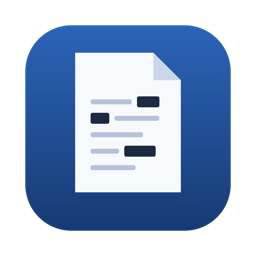
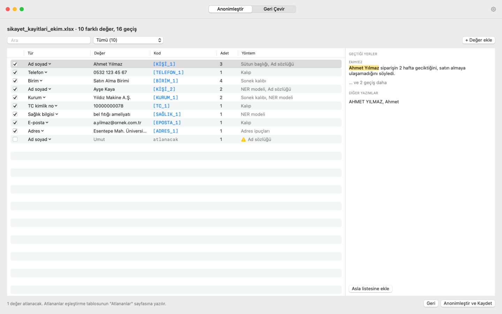

AnonimleştiriciYapay zekâya dosya vermeden önce içindeki kişileri gizleyin
Şikâyet kayıtlarını, müşteri notlarını, anket cevaplarını yapay zekâya analiz ettirmek artık çok kolay. Zor olan, o dosyalardaki isimleri, TC kimlik numaralarını, telefonları ve adresleri dışarı çıkarmamak. Ben de bu yüzden bu küçük Mac uygulamasını hazırladım.
Dosyanızı veriyorsunuz, uygulama içindeki kişisel verileri [KİŞİ_1], [TELEFON_1] gibi kodlarla değiştiriyor. Excel, Word ya da PowerPoint dosyanız aynı düzende kalıyor; tablolar, formüller, grafikler yerinde duruyor. Yapay zekâya bu kodlu dosyayı veriyorsunuz. Cevap geldiğinde de kodları tek tıkla gerçek isimlere geri çeviriyorsunuz.

Neyi, nasıl buluyor?
Türkçe belgeler için hazırlandı. TC kimlik numarasını doğrulama algoritmasıyla kontrol ediyor; Türkçe isimleri, "Sayın", "Bey", "Hanım" gibi unvanları, "Müdürlüğü", "A.Ş." gibi kurum adlarını tanıyor. Sözlükte olmayan isimler ve sağlık, din, siyasi görüş gibi hassas bilgiler için Yıldız Teknik Üniversitesi COSMOS ekibinin açık lisanslı Türkçe modelini kullanıyor. Bu model de bilgisayarınızda çalışıyor.
Hiçbir otomatik araç her şeyi yakalayamaz. Bu yüzden uygulama kaydetmeden önce bulduğu her şeyi size gösteriyor; yanlış olanın işaretini kaldırıyor, kaçanı elle ekliyorsunuz. Aynı kişi dosyanın her yerinde, hatta farklı dosyalarda bile aynı kodu alıyor. Böylece yapay zekâ kimin ne yaptığını takip edebiliyor.
Apple işlemcili (M1 ve sonrası) Mac ve macOS 13 ya da daha yenisi gerekiyor. Uygulama henüz Apple'ın ücretli sertifikasıyla imzalanmadığı için ilk açılışta bir kez izin vermeniz gerekiyor; adımlar kurulum rehberinde. Kişisel kullanım, akademik çalışmalar ve kamu kurumları için ücretsiz. Şirket içi kullanım için bana yazabilirsiniz.